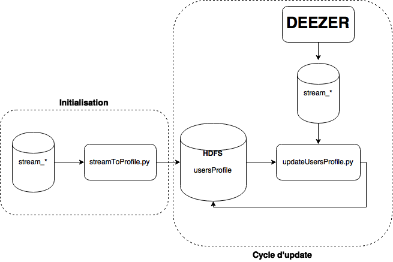
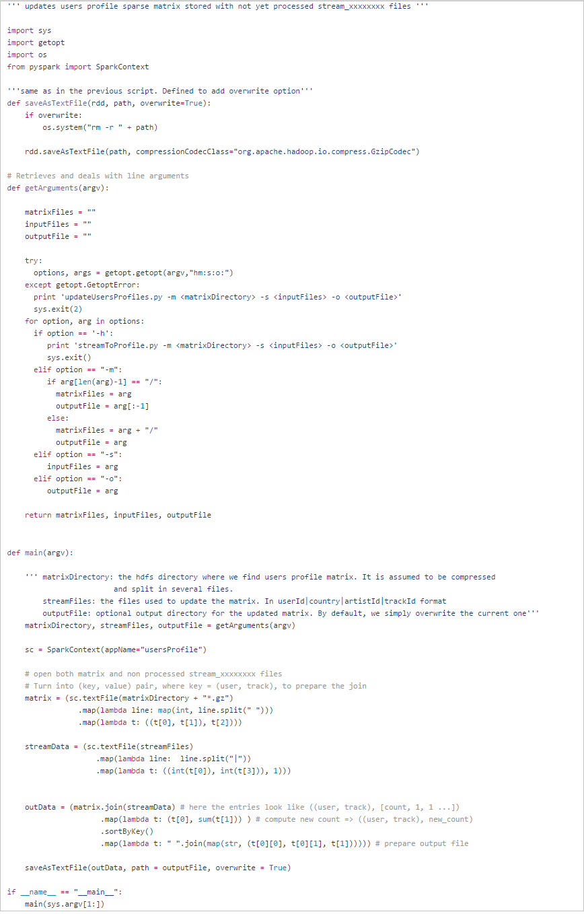
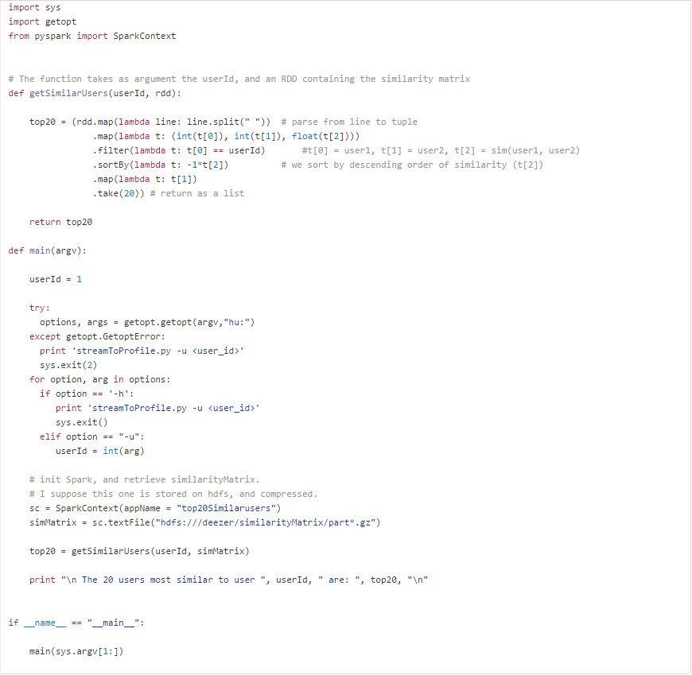

Technical Test
Kevin Payet - 2015/08/06
Pour la version française, cliquez sur le lien correspondant dans le menu à gauche.
This page contains the different scripts in answer to a technical test I was given, with different questions/problems, followed by the answer I designed.
The context is that of an online streaming music provider.
User's profile
To analyse the behaviour of our users, we save all the information about the music they listen to. For this test, we assume that we store this information in flat files, each of these files containing the information for a given day:
Each file contains ~50M lines.
We have ~16M active users.
Our catalog contains ~35M tracks.
The format of the files is: ||| cat stream_20141201 | head -n 1 5464754|FR|542|79965994
- We want to model each user by its music profile. This profile must be regularly updated, and of reasonable size, so that it can be used in production by the site.
a. Draw a schema for the processing chain that you would suggest.
Answer:
The stream_xxxxxxxx files contain the summary for a day's streams, in which every song listened to by a user is a line in the file.
We wish to convert these files as a Utility Matrix, where the rows are the different users, and the columns each represent a given song. The matrix elements give the number of times the user listened to the song.
Each user is modeled by a vector that describes its music tastes. The similarity between 2 users can be computed from their respective vector.
Given the total number of tracks(~35M), it can be assumed that the matrix will be extremely sparse. This means that we can use other storage formats than the naive bi-dimensional table format, with Nusers x Ntracks elements (here > 5e14 !).
There are many possibilities to store sparse matrices. I chose COO format (coordinate list), mainly for its simplicity. The idea is to store, only for non zero elements, the tuples (line, column, value).
We want to transform a file with format Userid|Country|ArtistId|TrackId, to a matrix with format UserId|TrackId|Count.
This type of operation can be easily performed with any programming language that supports relational algebra operations (projection, join, group by ...). It's the case of R (e.g. using dplyr package), Pig, Spark , etc.
To choose the tool I would use, I created a fake data file, with 50M lines, in the exact same format as the stream_xxxxxxxx files. Using R, I then tranformed this files to COO format, .i.e as a sparse matrix. The file created is only ~ 900 Mb, without any compression. However, it only contains the results for one day. In this test, we don't simply want to transform each input file, but we want to accumulate the information from many years of music streaming. In the test file I used, each user appears in average 3.27 times, which is small. Personally, I have more than 15000 songs in my music library. I doubt that the average user has that many tracks in its listening history. It's hard to estimate an exact number, but I will assume that in average each user has listened, since 2009, to 200-300 songs. It means that the in the final file, every user will appear in ~250 lines (userId, TrackId, Count), which yields a matrix on the order of 100-200 GB.
Given the size of this matrix, I decided to use Spark for the required operations.
I will assume that the matrix is stored on HDFS. Given their typical size, the stream_xxxxxxxx files don't have to be stored on HDFS, but in the code that follows, that is what I assume (which doesn't make a big difference).
This is how I see the process:
Initialization: First creation of the users profiles matrix, from one or several stream_xxxxxxxx files.
Updating the matrix, on a daily, weekly ... basis, from the stream files yet unused.

b. Write the corresponding code in the programming language of your choice.
Answer:
I used pySpark, Spark's python interface, to write the two scripts that perform the operations described above.
- streamToProfile.py transforms one or several input files (stream_xxxxxxxx) into a Users x Tracks matrix, which is then saved on HDFS.
spark-submit streamToProfile.py -i hdfs:///deezer/fakeData -o hdfs:///deezer/usersProfile -n numPartitions

- updateUsersProfiles.py updates the matrix created previously. The script takes as input the directory of the matrix on HDFS (where the part_r0000* are stored), the raw stream files, and a possible output file name. By default, the script simply overwrites the previous matrix by its up-to-date version.
spark-submit updateUsersProfile.py -m hdfs:///deezer/usersProfile -s hdfs:///deezer/stream_*

The two scripts compress the output matrix, which allows to significantly reduce the space taken by the latter.
2. We want to provide our users with the possibility to follow other users with the same tastes in music. We assume that we already have a matrix M, where M(i,j) is a similarity measure between user i and user j.
a. Define a similarity measure. Explain.
Answer:
In this exercise, we are interested in the design of a user-user collaborative recommender system.
The first step is to model each user by a row vector in the utility matrix.
It's from these vectors that we estimate the similarity between two users. The common similarity measures that can be used for this type of application are:
jaccard similarity
Pearson correlation coefficient
Cosine similarity
The Jaccard similarity is useful mainly for cases when we have a matrix that consists only of 1/0 ratings (for "seen"-"not seen", "viewed"-"not viewed" ...). In our case, we use the information on the number of times a user listened to a given song. This measure would thus be useless.
The Pearson correlation coefficient is probably the most widely used similarity measure for this type of system. It gives an estimate of the correlation between two user vectors:
The main strength of this measure is that experience has shown that it works better than most other statictics.
Furthermore, it is common to normalize the vectors before the similarity is computed, but this step is not required for the Pearson correlation, since it is already a part of the computation of the coefficient.
The main problem of this measure is that it overestimates the similarity when the number of items in common is low (in the limit of only one item in common, the similarity is 1), which is not acceptable. The solution is the so-called significance weighting, which consists in multiplying the similarity estimate Wau with:
where C is a cutoff to be defined (usually, C ~ 50 works well), and Ri is the set of items rated by user i (in our case the songs listened to).
The cosine similarity is a measure of the similarity of two vectors thanks to a measure of the angle between them. If the approach is different from the two previous ones (vectorial vs statistical before), the formula is pretty close to that of the Pearson correlation coefficient:
Like stated above, it is useful to proceed to average removal before computing the similarity. In this case, the previous formula becomes identical to the one for the Pearson coefficient.
The difference is simply in the way that missing items are dealt with in both cases. In Pearson's case, we limit ourselves to the items that are in common between the two users. In the case of cosine similarity, we simply consider that the absence of rating is equivalent to having a 0. Thanks to this difference, we don't need to apply any correction to the cosine similarity, even for a small number of items in common.
In the end, the cosine similarity, with average removal, gives results equivalent to those of the Pearson correlation coefficient with significance weighting.
In this case, I chose to go with the cosine similarity, even though the Pearson coefficient might give good results too.
b. What is the maximum size of the matrix? What are its properties? How would you store it?
Answer:
In the limit where we compute the similarity for every pair of users, the matrix would contain ~ 2.56e14 elements, which is huge.
This matrix is symmetric, which means that we only need to store half of its elements. But it's still too much, with ~ 1.3e14 elements.
But in this kind of problem, we are not interested in the similarity for every pair of users. We only care about the most similar users to a given user.
So, I think that we can compute the matrix M, but store only a part of it, e.g. the 100 most important measures for every user.
In general, we can store a symmetric matrix by keeping only the tuples ((i,j), value), such that i<j (where i and j is a user id, and value their similarity). However, since I chose to keep only the 100 most important measures for each user, we're bound to run into the case where, given a pair (user1, user2), user1 is among the 100 most similar users to user2, but user2 isn't among the 100 users most similar to user1.
So, I think that the simplest way to store the matrix on disk is to keep the same format as used above ("user1 user2 value"), with one such entry per line, and user1 = 1:maxUserId. The resulting file should be around 20-30 GB, without any compression, which is not that big.
Then, it all comes down to what usage we have in mind. I think that it's a good choice to store the file on HDFS, since it allows to use batch computation, with Pig or Spark, but also one-time queries, e.g. with HBase.
c. Write a getSimilarUsers function that takes as argument a user ID, and returns the 20 most similar users.
Answer:
Given the size of the matrix, it cannot be treated on a classic computer. So, I chose to keep working with Spark.
spark-submit getSimilarUsers.py -u 17
